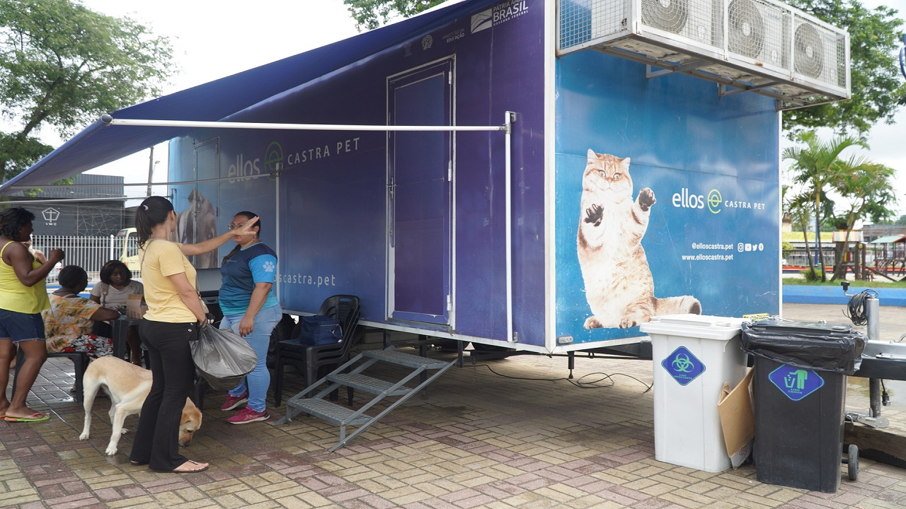
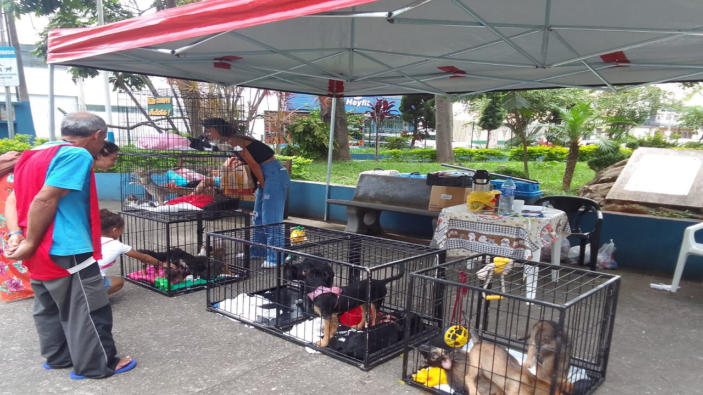
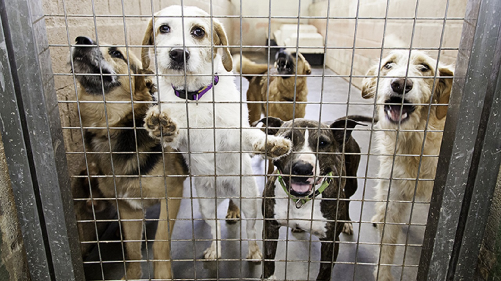

Projeto Castração
Oferecemos castração gratuita ou a baixo custo para reduzir o abandono e controlar a população de animais de rua.

Feira de Adoção
Organizamos feiras regulares de adoção para conectar animais resgatados com famílias responsáveis.

Resgate de Animais
Atuamos no resgate de animais em situação de risco, oferecendo cuidados médicos e lares temporários até a adoção.